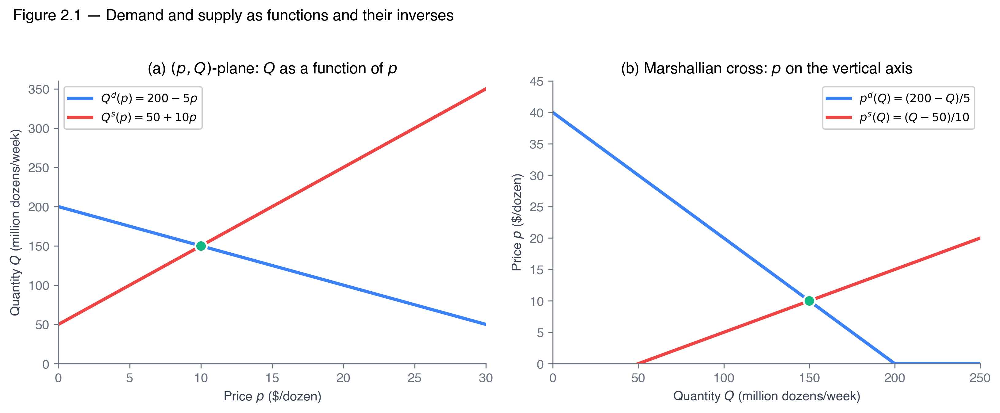

From graphs to algebra — functions, integrals, and total differentiation.
Dr. Richeng Piao
Department of Economics
Northeastern University — 100 min
Learning Objectives
By the end of class today, you will be able to…
2.1
Express
demand and supply as functions \(Q^d(p; \alpha_D)\) and \(Q^s(p; \alpha_S)\); solve a linear market for \(p^*\) and \(Q^*\) algebraically.
(Bloom L3)
2.2
Compute
consumer and producer surplus as integrals; recognize the triangle as the linear special case.
(Bloom L3)
2.3
Derive
comparative statics \(dp^*/d\alpha\) and \(dQ^*/d\alpha\) via total differentiation; sign both.
(Bloom L4)
2.4
Distinguish
"movement along" from "shift of" a curve as different partial derivatives; diagnose press headlines.
(Bloom L4)
2.5
Critique
linear-market predictions in light of constant-elasticity alternatives (preview of Ch 3).
(Bloom L5)
Retrieval Practice (3 min)
Quick — no grade, just hands. Wake up your 1116 muscles.
Q1 — Demand shifters
Name
two
things that shift the demand curve.
Q2 — Eyeball equilibrium
If \(Q^d = 100 - 2p\) and \(Q^s = 20 + p\), where does the market clear?
(Try in your head; we'll do it on a calculator next.)
Q3 — Surplus area
Consumer surplus is the area where, exactly?
Today: we promote curves to functions, areas to integrals, comparative-statics arrows to derivatives.
The Grocery Manager in Spring 2026
A category manager at a Midwestern supermarket chain prices her egg shelf for Q3 2026.
FRED APU0000708111
— US retail egg price.
• Pre-2022 baseline: \$1.50–\$2.00
• January 2025 peak:
\$4.95
• April 2025: \$5.12
• March 2026: \$2.35
Principles told her the
direction
. Her buyers want a
number
: where does the cost-of-goods line land in September?
Today's three tools:
algebra, integrals, total differentiation.
Today's Roadmap
§2.1
Demand and supply as
functions
— \(Q^d(p)\) vs \(p^d(Q)\).
§2.2
Market clearing
by equation — \(p^* = (a-c)/(b+d)\).
§2.3
CS & PS as integrals
— triangle is the linear special case.
§2.4
Comparative statics
— total-differentiate the market-clearing equation.
§2.5
Movement along
vs
shift
— two different partial derivatives.
§2.6
Beyond linear
— constant-elasticity preview of Ch 3.
12 min · Promoting curves to functions, with names and shifters
What is a Market — and What Does the Model Assume?
Before promoting demand and supply to functions, pause on the noun that anchors the chapter.
A market is defined by THREE things
Product type — eggs, not "agricultural goods"
Geographic scope — US wholesale, not global
Time horizon — a week of clearing, not a decade of structural change
The chapter's apparatus clears one such market at a time. The same firm sells in many distinct markets at once.
Three modeling assumptions
1. Homogeneous good — every Grade A large dozen interchangeable. The good is a commodity (eggs, wheat, copper, crude). Not a Picasso.
2. Single price + shared info — all participants pay/receive the same price; share info on prices, qualities, substitutes.
3. Many buyers and sellers — none large enough to move price alone. Chs 11–14 study what breaks when this fails.
All three together = a perfectly competitive market. These are approximations, not literal claims. The right question isn't "are they true?" (no) but "close enough that the model's predictions track the data?" — for commodities and broad consumer goods, usually yes; for markets with serious pricing power, no → Ch 11.
Information is the Key
When markets are large and information is transparent, even self-interested individuals produce socially efficient outcomes.
The Movie Theater — Efficient Outcome
Roughly equal lines — nobody is in charge.
Self-interest: minimize my own wait time.
Information:full — I see every line at a glance.
Result: rational individuals each picking the shortest line yields the shortest collective ticket time. The Invisible Hand works.
The Traffic Jam — Inefficient Outcome
Lane-changing — can't see what's beyond the car ahead.
Self-interest: get ahead of the car ahead of me.
Information:incomplete — I can't see the system-level jam I'm causing.
Result: the same rational behavior worsens the jam — everyone slower. The Invisible Hand fails.
Same self-interest. Same rationality. Different information → different outcome. The §2.2 supply-and-demand mechanism assumes the movie-theater conditions hold; Ch 17 returns to the traffic-jam case (externalities).
Why bother promoting demand to a function?
Graph (Principles)
Direction questions:
"Prices fell, so quantity demanded rose."
Function (2316)
Magnitude questions:
"At \(p = \$10\), \(Q^d = 150\) million dozens/wk."
The grocery manager needs the second.
Every tool today — market clearing, surplus integrals, comparative statics — starts by treating demand and supply as functions.
Live: Your Willingness to Pay for Dubai Chocolate
The viral Fix Dessert Chocolatier pistachio-knafeh bar — ~100g, viral on TikTok 2024–2025, knock-offs now at Lindt + Costco.
Dubai Chocolate
Pistachio + knafeh Fix Dessert Chocolatier (Dubai, est. 2023)
How much would you pay for one bar?
A) Up to $10
B) $11–$20
C) $21–$30
D) $30+ — ship me one
60 sec
Your votes ARE a demand schedule
At each price tier, count how many of you would still buy. That count, plotted against price, is the demand curve for Dubai chocolate in this room.
Demand isn't an assumption — it's a thing we measure. The function \(Q^d(p)\) is just a clean mathematical name for the count-vs-price relationship you just generated.
Next: we'll write \(Q^d(p)\) algebraically, hold tastes fixed, and ask what happens when other things change.
Review from Principles of Microeconomics
ECON 1116 Ch 4 — the graphs we're about to promote into functions. Drag the sliders.
Figure 4.1 — The Law of Demand
Figure 4.2 — Shifts in Demand
Movement vs shift. Fig 4.1: price changes → you slide along the curve. Fig 4.2: a non-price shifter changes → the whole curve moves. Today we'll write these as two different partial derivatives of \(Q^d(p; \alpha_D)\).
The two functions, with shifters
Demand
\(Q^d(p; \alpha_D)\)
Own price
\(p\) and a vector of
demand shifters
\(\alpha_D\): income, prices of substitutes & complements, tastes, expectations, number of buyers.
Supply
\(Q^s(p; \alpha_S)\)
Same own price;
supply shifters
\(\alpha_S\): input prices, technology, number of sellers, expectations — and for our running example, the size of the laying flock.
Two derivatives, two meanings:
\(\partial Q^d/\partial p\) is
movement along
(slope of demand curve, holding shifters fixed); \(\partial Q^d/\partial \alpha_D\) is
shift
(the whole curve moves). §2.5 hinges on this distinction.
Workhorse all chapter:
linear
\(Q^d = a - bp\), \(Q^s = c + dp\) with \(a, b, c, d > 0\).
Inverse functions — how to get \(p^d(Q)\) from \(Q^d(p)\)
The Marshallian cross plots inverse demand and supply (price on the vertical axis). To get there, just solve the function for \(p\).
Worked example — HPAI eggs
Step 1. Start with the demand function:
\(Q^d = 200 - 5p\)
Step 2. Move \(5p\) to the left side (add to both sides):
\(5p + Q^d = 200\)
Step 3. Subtract \(Q^d\) and divide both sides by \(5\):
If \(Q^d = a - bp\), then \(p^d(Q) = \dfrac{a - Q}{b}\). Same algebra for supply: \(Q^s = c + dp \Rightarrow p^s(Q) = \dfrac{Q - c}{d}\).
Sanity check. At \(p = \$10\): \(Q^d = 150\). Plug \(Q = 150\) into the inverse: \(p^d = (200-150)/5 = 10\) ✓. Same point on the curve, two ways of writing it.

Same function, different axes. Solve for equilibrium with \(Q^d(p)\); compute surplus with \(p^d(Q)\).
Why we draw it this way: Marshall (1890) treated quantity as the independent variable. We live with his convention because §2.3's surplus integrals naturally take inverse demand as the integrand.
Tastes Shifter in Action: Three 2024–2026 Viral Trends
A taste shock enters \(\alpha_D\) and shifts the whole demand curve outward. Same pattern, three goods.
Dubai Chocolate
Fix Dessert Chocolatier (Dubai, est. 2023). Pistachio + knafeh viral on TikTok 2024–25.
Retail \$15–\$50/bar. Knock-offs at Lindt, Trader Joe's, Costco by 2025. Knafeh prices in MENA spiked.
Labubu
Pop Mart blind boxes — "Monsters" series resells \$30–\$300+ on the aftermarket.
Trendy blind-box market \$2.37B (2024) → \$2.51B (2025) per Global Growth Insights.
2024 Target Valentine's drop sold out same day; resold \$200+ on eBay vs \$45 retail.
Same micro-mechanism, three markets. A viral taste shock → \(\alpha_D\) up → \(D\) shifts right → both \(p^*\) and \(Q^*\) rise (the same-direction co-movement of Heads Up 2.5). The supply side often can't respond fast enough — hence the resale premiums and knock-offs.
Heads Up 2.1 — \(Q^d(p)\) is not \(p^d(Q)\)
The single most common source of wrong-surplus errors.
They're reciprocals in the linear case but they're
different functions
.
Same numbers, two objects
If \(Q^d(p) = 200 - 5p\), then plug \(p = 10\) to get \(Q = 150\).
If \(p^d(Q) = (200 - Q)/5\), plug \(Q = 150\) to get \(p = 10\).
If you read this as
"supply shifted out"
— you'd be wrong.
A supply shift outward predicts: \(p \downarrow\) and \(Q \uparrow\) —
opposite directions
.
Same-direction co-movement is the signature of a
demand shift along a relatively steep supply curve
.
§2.5 returns to this with the formal partial-derivative diagnostic. Heads Up 2.5 puts a name on the trap.
Poll #1: The Used-Car Trap
Used-car prices rose 5% and used-car sales volumes rose 3% over the same period.
Most likely explanation?
A) Supply shifted outward
B) Demand shifted outward along a steep supply curve
C) Both demand and supply shifted out
D) Cannot tell from \(p\), \(Q\) alone
60 sec to vote
Answer: B — Demand shift along steep supply
Same-direction co-movement of \(p\) and \(Q\)
is the diagnostic for a demand shift
.
Trap (A):
A supply shift
outward
would lower price — \(p \downarrow\), \(Q \uparrow\). The two would move
opposite
directions.
Where Demand Meets Supply —
Figure 4.5
Drag the sliders. Dashed (D₀, S₀) = original; solid (D₁, S₁) = new. Green dot \(E\) marks where the market clears.
What to try:
Push demand right (income up). Pull supply left (HPAI). Watch how \(p^*\) and \(Q^*\) co-move — same direction for demand shifts, opposite for supply shifts.
§2.2 next: solve this algebraically with HPAI eggs — same picture, exact numbers.
Discussion 1 — Headline Diagnosis
For each headline, classify the underlying market move and write down what data would confirm it.
1.
"Used cars: prices and volumes both up — supply crunch easing"
(WSJ, March 2026)
2.
"Egg shortage drives spring 2025 price spike to record \$5.12"
(CNN, May 2025)
3.
"Austin rents finally moderate as construction catches up"
(Bloomberg, late 2024)
Think 90s · Pair 90s · Random call × 3
§2.2 Market Clearing — Equilibrium by Equation
13 min · The egg market in algebra
Why markets move toward equilibrium
The condition \(Q^d(p^*) = Q^s(p^*)\) is just an equation. What forces the price toward \(p^*\)? Adam Smith's invisible hand.
Price above \(p^*\) — SURPLUS
\(Q^s > Q^d\). Inventories pile up → sellers discount → price falls. \(Q^s\) drops along supply, \(Q^d\) rises along demand → gap closes.
Price below \(p^*\) — SHORTAGE
\(Q^d > Q^s\). Buyers compete → price bid up. \(Q^d\) falls along demand, \(Q^s\) rises along supply → gap closes.
Symmetric, decentralized, robust. No central planner needs to know each buyer's WTP or each seller's cost — price itself carries the info, like a wave carrying the shape of the sea floor.
Feb 14, 2024: CEO Kirk Tanner tells investors Wendy's will test dynamic menu pricing in 2025 — prices that rise at peak hours, fall during slow ones, on real-time digital menu boards.
The economic logic is the §2.2 adjustment story made literal: a fixed posted price leaves shortages at noon (queues) and surpluses at 3 PM (idle capacity). A price that moves clears both.
48 hours later: hostile social media; "price gouging" headlines; stock down ~1.4%; Feb 28 clarification: "we meant promotional discounts during slow periods." Plan dead by March.
Sources: Wendy's Q4 2023 earnings call Feb 14 2024; WSJ Feb 27–28 2024.
Heads Up 2.2 — "Equilibrium" doesn't mean "where the market always is." It's the resting point of the adjustment process. Real markets are constantly bumped off — the question is whether they head toward \(p^*\) fast enough that the model predicts well over the relevant horizon.
Lesson. The §2.2 mechanism is real, but in markets with strong customer expectations of price stability, firms accept the inefficiency of persistent excess demand or supply rather than pay the political cost of letting prices clear. Visible hand > invisible hand cost in this case.
Uber Surge Pricing — When the Adjustment Mechanism Works
Wendy's tried dynamic pricing and the public revolted. Uber does it daily, in an app, without comparable backlash. Same §2.2 mechanism — different politics.
\(p^* = \$20\) per ride, \(Q^* = 1{,}500\) rides/hr
Snowstorm hits — demand shifts out
Without surge: price stuck at \$20 → excess demand — long waits, cancellations, rider frustration (the "fixed-price taxi" failure mode in pre-Uber NYC).
With surge: price clears the market
Uber raises the per-ride price along the new demand. Higher fare pulls more drivers online (movement up supply) and chokes off the marginal rider (movement up new demand). Market clears at higher \(p^*\) and higher \(Q^*\).
Why Uber caps surge in crises (terror attacks, transit shutdowns)
A 4× surge during a Brooklyn shooting (2022) generated bad publicity. Uber now caps charges to riders — recreating excess demand on purpose — while still paying drivers the uncapped surge rate.
The cap is a price ceiling. Distributional move: riders get queues; drivers still get the rent. Wendy's would have been better at this if its prices had been hidden in an app, not on a menu board.
Equilibrium = the equation \(Q^d(p^*) = Q^s(p^*)\)
A market clears when the quantity buyers want at the prevailing price equals the quantity sellers want. With functions, that statement becomes an
equation
we solve.
For the linear system \(Q^d = a - bp\), \(Q^s = c + dp\):
Why \(\Delta Q = -10\), not \(-30\)?
The 30-unit inward shift was clawed back: \(2/3\) absorbed by movement-along-demand (the \$2 price rise pulled 20 units of supply back along the new curve), \(1/3\) by net quantity decrease.
Walkthrough 2.3 — A Pure Demand Shift: Plant-Based Meat 2022 → 2025
Same algebra as W2.2, opposite co-movement. The diagnostic for "supply or demand shift" lives in the sign pattern.
Setup
US retail plant-based meat (M lbs/qtr): 2022: \(Q^d = 600 - 100p\), \(Q^s = 200 + 100p\) 2023–25: weak repeat-purchase + GLP-1 anorectic rollout (Wegovy/Zepbound) + whole-food protein cultural turn → demand drops by 200 at every \(p\): \(\widetilde Q^d = 400 - 100p\). Supply unchanged.
Reality check
Beyond Meat US net retail: ~\$406M FY2022 → ~\$253M FY2024. Lower volumes and lower per-pound average price — the southwest movement the model predicts.
Universal sign diagnostic: a pure demand shift moves \(p^*\) and \(Q^*\) the same direction; a pure supply shift moves them opposite directions (W2.2: price ↑, quantity ↓). This is the rule Heads Up 2.5 will invoke.
Application 2.3 — Cocoa 2024–2026: Same Math, 3× the Scale
Cocoa futures:
~\$2,500–\$3,000/ton
through 2023 →
~\$10,900/ton
April 2024 (Cacao Swollen Shoot Virus + West Africa weather) →
~\$2,900/ton
February 2026.
ICCO bulletins: 2023/24 production 4.45 Mt vs 4.78 Mt grindings → 374K-ton deficit. By Q1 2026:
75K-ton surplus
.
Same Walkthrough 2.1 + 2.2 algebra. Different numbers.
Different units. Different commodity. Identical equations.
After Atari 2600's runaway success, dozens of new publishers flooded the market with cartridges of widely varying quality — including the infamous E.T. the Extra-Terrestrial tie-in (1982), millions of unsold copies buried in a New Mexico landfill Sept 1983 (verified by 2014 documentary).
• Wholesale cartridge prices: \$30+ → under \$5 by mid-1984. • Atari revenue: ~\$2B (1982) → under \$100M (1984). • Warner Communications wrote down Atari by hundreds of $M.
Sources: Kent, Ultimate History of Video Games (2001); Atari: Game Over (2014); Warner 10-K, 1983–84.
The model: TWO shifts at once
• Free entry of low-quality publishers → \(Q^s\) shifts out. • Buyer perception of quality drops → \(Q^d\) shifts in.
Price: both shifts push \(p^*\) down (reinforce). Quantity: the two fight — outcome depends on which dominates. (§2.5 returns to this puzzle.)
Recovery: Nintendo's 1985 NES is the §2.2 prescription — shift supply back inward to a sustainable level and restore demand via a credible quality signal (licensing). Wholesale recovered to \$30–\$50 by 1986; oligopoly stable since.
The flock partially recovers, parameterized as \(Q^s = 20 + 10p + \alpha\) with
\(\alpha = 15\)
units of recovery (half the original shock). What's the new \(p^*\)?
Why
exactly
halfway?
Because supply is linear and the shifter \(\alpha\) enters as a constant. We'll prove \(dp^*/d\alpha = -1/15\) in §2.4 — the price drop per unit of recovery is exactly \(1/15\), so 15 units of recovery exactly halve the \$2 shock.
§2.3 Surplus as Integrals
12 min · The triangle is the linear special case
From triangle to integral
Principles
Consumer surplus = triangle above \(p^*\), below demand, between \(Q = 0\) and \(Q^*\).
Works perfectly —
when demand is linear
.
2316
Same intuition, more general object: a definite
integral
of inverse demand minus \(p^*\).
Triangle = linear special case. Integral handles
everything
.
Dupuit (1844) introduced the triangle. Modern micro generalizes via the integral.
The integral form
At quantity \(q\), the inverse demand \(p^d(q)\) is the
willingness to pay
of the marginal buyer of the \(q\)-th unit. Per-unit surplus is \(p^d(q) - p^*\). Summing — integrating — over all infra-marginal units:
The integral
is
the triangle when demand is linear. The integral form earns its keep when demand
isn't
— constant-elasticity, polynomial, log-linear, anything. See
Math Appendix A.8
.
Heads Up 2.3 — Integrate the
Inverse
, not the Direct, Demand
The CS integrand is \(p^d(q) - p^*\), where \(p^d\) is
inverse demand
. Students who grab \(Q^d(p)\) and integrate \(\int Q^d(p)\,dp\) get a geometrically different (and wrong) object.
If you have \(Q^d(p)\)
Invert first.
Solve for \(p\) as a function of \(Q\), then integrate with respect to \(Q\) from \(0\) to \(Q^*\).
If your integrand has units of price, you're integrating with respect to
quantity
. ✓
If your integrand has units of quantity, you're doing it wrong.
Theory & Data 2.1 — NYC Congestion Pricing Welfare
Davis et al., NBER WP 33584
(March 2025; revised January 2026) measured the short-run welfare effects of NYC's January 2025 congestion-pricing program.
Method: vehicle-entry data + speed measurements + calibrated elasticities → integrate the time-cost-adjusted inverse demand for CBD trips.
The calculation is exactly the §2.3 integral. Different units (time-cost vs dollar-price), identical mechanics.
≥ \$14.3M
Driver welfare gain per week
~\$523M/yr
Toll revenue, passenger vehicles
\$750M/yr
Driver surplus alone, before revenue use
The integral lets you evaluate real policies in dollar terms.
Tonight's chapter is the toolkit; the policy questions Ch 17 will revisit explicitly.
Break
5 min · Press 5 for the timer
Poll #3: Which Integral Computes CS?
You're given linear demand \(Q^d(p) = 200 - 5p\) and equilibrium price \(p^* = \$10\). Which is the
right
integral for consumer surplus?
A) \(\int_0^{10}(200 - 5p)\,dp\)
B) \(\int_{10}^{40}(200 - 5p)\,dp\)
C) \(\int_0^{150}\bigl[(200-q)/5 - 10\bigr]\,dq\)
D) \(\int_0^{150}(200-q)/5\,dq\)
90 sec to vote
Answer: C — integrate \([p^d(q) - p^*]\) over \([0, Q^*]\)
C is canonical.
Integrand:
inverse demand minus \(p^*\)
. Bounds: \([0, Q^*]\). The "minus \(p^*\)" step is what makes it surplus, not just value.
B is also legitimate
— the same triangle, integrated in price-space from \(p^*\) up to the choke price. Geometrically equivalent. Throughout the book we use form C because it generalizes to non-linear demand cleanly.
§2.4 Comparative Statics via Total Differentiation
15 min · One formula, every market
Brute force vs structure
Brute force
Re-solve the whole system after every parameter change.
Works, but hides
why
the price moves the way it does.
Total differentiation
One formula gives \(dp^*/d\alpha\) and \(dQ^*/d\alpha\) directly from partial derivatives.
Same answer, with structure:
why
elastic vs inelastic markets respond differently.
Calculus Corner 2.2 — The Comparative-Statics Formula
Equilibrium implicitly defines \(p^* = p^*(\alpha)\) via \(Q^d(p^*, \alpha) = Q^s(p^*, \alpha)\). Total-differentiate both sides; isolate \(dp^*/d\alpha\):
Linear-model says 39M; flock alone explains ~9M. Gap is real.
The gap points to:
wholesale-inventory drawdowns, food-service substitution away from shell eggs, and the linear model breaking down far from its calibration point. Don't over-claim the fit;
do
claim that direction and rough magnitude are consistent with partial supply recovery.
§2.6 returns to this. Ch 3 reorganizes via elasticity.
Visualizing the supply recovery
Original \(Q^s_0 = 20 + 10p\) and partially-recovered \(Q^s_1 = 35 + 10p\) (\(\alpha = 15\)) against unchanged demand.
\(E_0 = (\$12, 140)\) → \(E_1 = (\$11, 145)\)
Equilibrium moves
along the demand curve
— that's the diagnostic for a pure supply shifter.
For one shifter at a time (supply or demand, not both), the four cases collapse to a clean reference table:
Curve that shifts
Direction
Effect on \(p^*\)
Effect on \(Q^*\)
§2.4 sign
Demand
Out (↑)
rises
rises
\(dp^*/d\alpha_D > 0\), \(dQ^*/d\alpha_D > 0\)
Demand
In (↓)
falls
falls
both negative
Supply
Out (↑)
falls
rises
\(dp^*/d\alpha_S < 0\), \(dQ^*/d\alpha_S > 0\)
Supply
In (↓)
rises
falls
both flip
Diagnostic in two words: when \(p^*\) and \(Q^*\) move together → demand shift; when they move apart → supply shift. W2.2 (eggs, supply in) and W2.3 (plant-based, demand in) are the two diagonals of the table; the \(b+d\) denominator sets the magnitudes.
Heads Up 2.4 — Sign
Both
Derivatives
Students sign \(dp^*/d\alpha\) correctly and assume the quantity move follows.
It doesn't.
Staples et al. (2020)
JEE
: this is among the most persistent comparative-statics homework errors. Always sign
both
.
Application 2.5 + Theory & Data 2.2
Red Sea 2024 — supply-side shock
Houthi attacks force Asia–Europe rerouting around Cape of Good Hope. UNCTAD Feb 2024:
Suez tonnage
−50%
Cape arrivals
+89%
SCFI
more than doubled
Predicted by \(dp^*/d\alpha > 0\) for an inward supply shift. The number was the question.
Philadelphia soda tax — pass-through
Seiler, Tuchman, Yao (2020
JMR
) on the 1.5¢/oz tax, scanner data:
97%
avg pass-through to retail
Result:
+34% retail price, −46% local sales
. High pass-through ↔ elastic supply meeting inelastic short-run demand.
Ch 3 rewrites this in elasticity form — the tax-incidence formula.
When one side is much more elastic than the other, the
less-elastic side absorbs most of the cost shock
. The Red Sea pattern + Philadelphia pattern share the same logic.
Discussion 2 — The Red Sea Pass-Through
In the 2024 Red Sea disruption, ocean-freight rates roughly
doubled
. Yet retailers reported only modest price increases on goods imported from Asia.
1.
Why might the
retail
price (downstream) move much less than the
freight
price (upstream)?
2.
What does that say about the relative elasticities of (a) freight supply, (b) freight demand, (c) retail-good supply, (d) retail-good demand?
Stand on a spectrum: how much of the freight-cost shock reached consumer prices on Asian-import goods?
90 sec think + 90 sec spectrum
§2.5 Movement Along vs Shift
8 min · Two partial derivatives, two phenomena
Same picture, formal language
In Principles, "change in quantity demanded" vs "change in demand" was a
graphical
distinction.
In 2316, they're
two different partial derivatives
of \(Q^d(p; \alpha_D)\):
• \(\partial Q^d/\partial p\) = movement along the curve
• \(\partial Q^d/\partial \alpha_D\) = shift of the curve
Writing \(Q^d(p; \alpha_D)\) explicitly forces you to say which parameter you're holding fixed — which resolves ~80% of market commentary's ambiguity.
Walkthrough 2.7 — Housing: Same Demand Shift, Two Time Horizons
Setup
Demand: \(Q^d = 100 - p + \alpha_D\)
SR supply (steep): \(Q^s_{SR} = 40 + 0.1p\)
LR supply (flatter): \(Q^s_{LR} = 40 + p\)
Demand pulse: \(\Delta\alpha_D = 10\)
\(\Delta p = +\$500\)/mo, \(\Delta Q = +5\text{K}\) units
— rent rises less, builders respond.
"Rents spike because supply isn't keeping up"
— literally correct, but it's a
time-horizon
claim. The SR-to-LR transition is the full story.
Austin vs Cleveland — Same Shock, Different Supply Slopes
Same national-level demand pulse (post-2020 remote-work + migration),
dramatically different metro paths
.
Austin:
sharp 2021–2022 rent spike, partial 2023–2024 moderation. Supply slope close to SR (zoning, geography, slow permitting).
Cleveland:
smoother growth. Supply slope closer to LR (more elastic).
Source: Zillow Observed Rent Index (ZORI), 2020–2026.
Application 2.6 — The "Greedflation" Debate (2022–2024)
Greedflation hypothesis
Both \(\alpha_S\) (input-cost shifter)
and
a behavioral parameter (markup \(\mu\)) shifted together.
Textbook hypothesis
Only \(\alpha_S\) shifted; the price rise is the comparative-statics prediction of Walkthrough 2.6.
Empirical test:
Ganapati, Shapiro, Walker (2020
AEJ:Applied
) found ~70% pass-through in US manufacturing — roughly what a competitive-pricing model predicts. Markups did rise in some sectors but the macro picture is mixed.
Methodological lesson:
"shift of supply" vs "movement along supply" vs "change in firms' objective function" are
different claims
that can be tested separately. The function-based language makes the hypotheses precise enough to argue about.
Heads Up 2.5 — Same-Direction Co-Movement
"Used-car prices went up
and
volumes went up, so supply must have shifted out."
No.
\(p \uparrow\) and \(Q \uparrow\) together
Demand shift along stable supply
\(p \downarrow\) and \(Q \uparrow\)
Supply shift along stable demand
Every financial-news headline that said "booming used-car market shows supply crunch easing" was diagnosing the wrong shifter.
When Both Curves Shift At Once — The Ambiguity Trap
Single-shifter signs are unambiguous. Two simultaneous shifts give an ambiguous direction in one of \(p^*\) or \(Q^*\) — data alone can't tell you which.
Heads Up 2.6 — Two simultaneous shifts can produce one ambiguous direction. Don't take §2.4's single-shift signs and add them. The signs don't add. The §2.4 formula still applies term by term, but the sign of \(dQ^*/d\alpha\) depends on the ratio of the two effects, not on their signs alone. Practical rule: draw the two shifts on separate diagrams, solve each, then compare — never on the same diagram.
Poll #4: Austin vs Cleveland
Austin rents rose
25%
from 2020 to 2022; Cleveland rents rose
10%
over the same period. Most likely explanation?
A) Austin had a much bigger demand shift
B) Austin's supply curve is steeper (closer to SR)
C) Both A and B
D) Cleveland residents are more price-sensitive
60 sec to vote
Answer: C — Both A and B compound
Demand shifted more in fast-growing Austin (population inflow);
and
Austin's housing supply is more inelastic (zoning + slow permitting).
Why C beats A or B alone:
if only A, Cleveland would still match Austin proportionally to its smaller demand pulse; if only B, Cleveland's flatter LR-like supply would absorb the same demand pulse with smaller \(\Delta p\). Both compound.
§2.6 Beyond Linear
3 min · Where Ch 3 picks up
Linear is a starting point, not the destination
The linear approximation works
near
the observed equilibrium and breaks down
far from
it.
A linear egg model fit at \((\$10, 150)\) gives nonsense at \(p = \$1\) (\(Q^d = 195\) million dozens? no) or \(p = \$30\) (\(Q^s < 0\)? no).
Constant-elasticity demand
\(Q^d = A p^{-\varepsilon}\) is closer to the data for many commodities (cigarettes, gasoline, electricity).
Ch 3
reorganizes around
elasticity
— a unit-free pure number that scales across markets.
Where today's tools go next
Ch 3 — Elasticity
Today's \(dp^*/d\alpha = -1/(b+d)\) becomes the
tax-incidence formula
. Pass-through ratios get a closed form.
Ch 6 — Demand
CS splits into
Hicksian (compensated)
vs
Marshallian (uncompensated)
variants. Same integral form, different demand objects.
Ch 10 — Perfect Competition
Today's welfare integral becomes the formal
welfare theorem
: competitive equilibrium maximizes total surplus.
Ch 11 — Monopoly
DWL of monopoly
= the same integral, with \(P_m > MC\) replacing \(P^* = MC\).
Ch 17 — Externalities
NYC congestion pricing
returns as a Pigouvian-tax application. The Davis et al. \$14.3M/wk welfare gain is the §2.3 integral evaluated on the externality-corrected market.
Key Takeaways
Demand and supply are functions, not curves.
Algebra beats eyeballing. Linear: \(p^* = (a-c)/(b+d)\).
Surplus is an integral.
Triangle is the linear special case. Real policies (NYC congestion pricing) get evaluated by the integral, in dollars.
Comparative statics is one formula.
Total-differentiate the market-clearing condition; sign both \(dp^*/d\alpha\) and \(dQ^*/d\alpha\) separately.
Movement along ≠ shift.
Two different partial derivatives. Co-movement direction of \(p\) and \(Q\) is the diagnostic.
Linear is a starting point.
Ch 3 generalizes via elasticity.
The grocery manager from the opening hook now has the tools to translate USDA's Q3 flock forecast into a Q4 shelf price. The rest of the book generalizes the toolkit.
Exit Ticket (2 min)
Sign \(dp^*/d\alpha\) and \(dQ^*/d\alpha\) for each parameter change.
One sentence each.